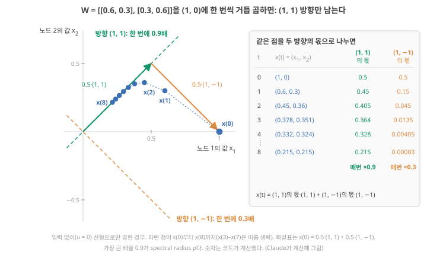
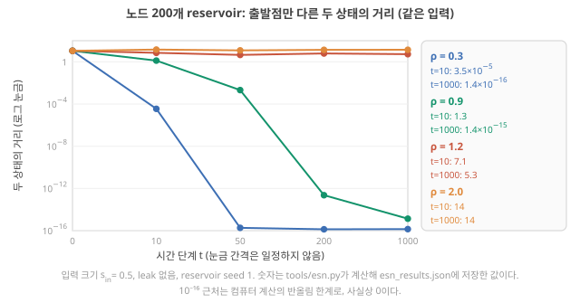
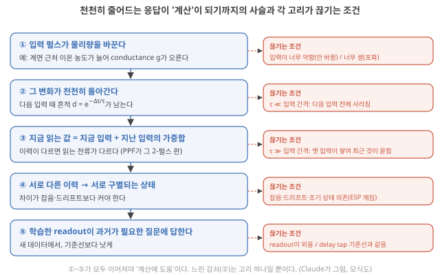
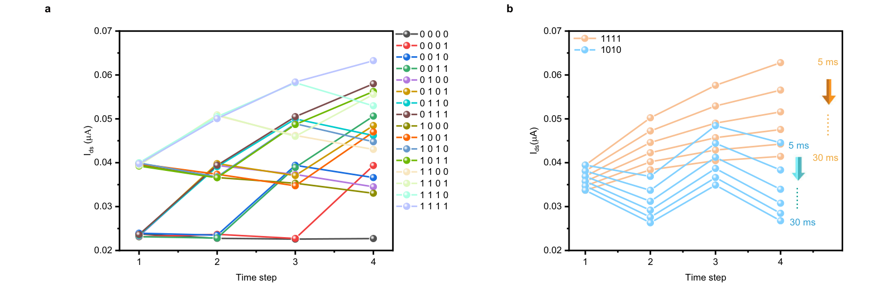
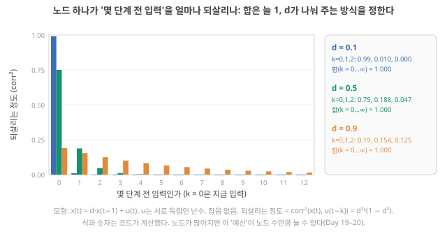

Day 16. 고윳값·spectral radius·leak과 ’느린 전류 → 계산’의 조건
Phase 2 · RC는 왜, 어떻게 작동하는가
이번 질문 노드가 여럿이면 무엇이 기억의 길이를 정하고, 천천히 감소하는 전류는 언제 계산에 도움이 되나?
왜 배우나 '느린 감쇠 → 계산' 문장에서 내 측정이 확인하는 고리를 가려낸다.
오늘의 장면 상태 벡터 × 행렬 W → spectral radius ρ → 기억 길이 결정 → leak rate a로 배율 조정
오늘 반드시 d, τ, 고윳값, ρ, a는 서로 다른 양이다. 느린 감쇠가 계산에 도움되려면 다섯 고리가 모두 이어져야 한다.
나중에 봐도 됨 2×2 고윳값 공식 · a = Δt/τ 유도 · memory budget 증명
넘어가는 기준 '오늘 반드시'를 내 말로 말할 수 있으면 충분합니다.
이후 쓰이는 곳 Day 17–18 선형 기억과 비선형 · Day 19–20 노드 수와 용량 · Day 21–22 ESN 실습 · Day 23–24 τ와 시간척도
지난 학습 복습
지난 학습 단위(Day 15 · fading memory와 입력 간격, 처음 상태를 잊는 것(ESP))의 핵심을 다른 예로 확인합니다. 고르는 즉시 맞았는지와 이유가 보입니다. 틀려도 아래 학습자료는 그대로 열려 있고, 틀린 문제에는 다시 볼 곳이 붙습니다.
학습자료
4. Spectral radius와 leak rate: 행렬이 상태를 몇 배로 줄이나
상황. 노드가 여럿(device 여러 개, 또는 소프트웨어 reservoir 노드)이면 노드끼리 섞이는 효과가 더해집니다. 논문은 이를 "spectral radius를 0.9로 맞췄다"처럼 한 줄로 씁니다.
왜 지금? 노드 하나의 \(d\)가 이제 표 \(W\)로 바뀌므로, "한 단계에 몇 배로 줄어드나"를 어떻게 읽는지 새로 배웁니다.
어디에 쓰이나? 논문의 spectral radius \(\rho\)와 leak rate 값이 내 device의 \(\tau\)·입력 간격과 같은 종류의 양인지 다른 양인지 구별해 읽을 때 씁니다.
끝나면 할 수 있는 것. 2×2 표 \(W\)를 (1, 0)에 거듭 곱한 그림에서 "곱해도 방향이 안 바뀌는" 두 방향 (1, 1), (1, −1)과 그 배율(고윳값 0.9, 0.3)을 찾고 손 계산으로 확인하며, spectral radius가 "가장 오래 남는 방향의 배율"이라는 것과 ρ < 1이 ESP의 조건으로 언제 맞고 언제 모자라는지, leak rate \(a\)가 배율을 \((1-a) + a\lambda\)로 바꾸는 것을 말할 수 있다. 그리고 \(d\)·τ·고윳값·ρ·\(a\)를 구별할 수 있다.
앞 구간들을 세 줄로. 노드 하나 \(x(t+1) = d\,x(t) + u(t)\)에서 \(d\)는 한 단계 뒤 남는 몫이고, \(k\)단계 전 입력의 몫은 \(d^k\)로 줄었습니다(fading memory). \(d\)는 device의 시간상수와 입력 간격으로 \(d = e^{-\Delta t/\tau}\)였습니다. 출발점만 다른 두 벌의 차이는 입력과 상관없이 매 단계 \(d\)배가 되어, \(d < 1\)이면 처음 상태를 잊었습니다(echo state property). 이 구간은 노드가 여럿일 때 이 '\(d\)'의 자리를 무엇이 차지하는지 봅니다. 여기서 상태 \(x\)는 숫자 하나가 아니라 노드마다 하나씩인 숫자 목록(벡터, vector)입니다.
Day 13–14의 노드 두 개에서 이어서. 노드 하나에서는 숫자 \(d\) 하나가 "한 단계에 몇 배로 줄이나"를 정했습니다. Day 13–14의 노드 두 개는 update식 \(x(t+1) = \tanh(W x(t) + W_{in} u(t))\)에서 \(d\) 자리에 2×2 표(행렬, matrix) \(W\)(행 1 = (0.4, 0.3), 행 2 = (−0.3, 0.5))가 있었고, 입력이 0이 된 뒤 상태는 \(x(1) = (0.762, -0.462)\) → \(x(2) = (0.164, -0.430)\) → \(x(3) = (-0.063, -0.258)\)으로 줄어들면서 노드 1의 부호가 바뀌었습니다(Day 13의 노드 두 개 손 계산). 이 \(W\)는 몇 배로 줄이는 표일까요? 표는 숫자가 아니니 바로 말할 수 없습니다.
Day 11–12의 표(행 1 = (0.5, 0), 행 2 = (0, 0.9))는 대각선에만 숫자가 있어서 칸마다 따로 곱하기만 했습니다. 그래서 (1, 0)은 방향 그대로 0.5배, (0, 1)은 0.9배가 되었고, 그 배율을 대각선에서 그대로 읽었습니다(Day 11의 대각선 배율). 대각선 밖에도 숫자가 있으면 이렇게 읽을 수 없습니다. 이 구간의 첫 예로는 Day 13–14의 \(W\) 대신, 두 노드가 서로를 같은 세기로 섞는 표
\[ W = \begin{pmatrix} 0.6 & 0.3 \\ 0.3 & 0.6 \end{pmatrix} \]
을 씁니다. Day 13–14의 \(W\)는 상태가 '돌면서' 줄어드는 조금 더 복잡한 경우라서, 이 표로 원리를 본 뒤 끝에서 Day 13–14의 \(W\)로 돌아옵니다. 이 \(W\)에 (1, 0)을 곱하면(행마다 같은 자리끼리 곱해 더하는 행렬–벡터 곱, Day 11 기초) 행 1: \(0.6 \times 1 + 0.3 \times 0 = 0.6\), 행 2: \(0.3 \times 1 + 0.6 \times 0 = 0.3\), 곧 (0.6, 0.3)입니다. 둘째 칸이 0이던 벡터에 둘째 칸 값이 생겼으니 방향이 바뀌었습니다. 그래서 대각선의 0.6을 배율이라고 읽을 수 없습니다.
무엇을 볼지. 그림 4(a)는 이 계산을 계속한 것입니다. 가로축은 노드 1의 값, 세로축은 노드 2의 값이고, 파란 점 하나가 상태 하나입니다. (1, 0)에서 출발해 \(W\)를 한 번 곱할 때마다 다음 점으로 갑니다(입력 없이 선형으로만). 점들이 어느 직선으로 모이는지, 그리고 그 직선 위에서는 한 번 곱할 때 몇 배가 되는지 보세요. 그림 4(b)의 표는 같은 점들을 두 점선 방향의 성분으로 나눈 값입니다.

그림 4 따라 읽기.
- 점의 좌표: \(x(1) = (0.6, 0.3)\), \(x(2) = (0.45, 0.36)\), \(x(3) = (0.378, 0.351)\). 둘째 칸 ÷ 첫째 칸이 0 → 0.5 → 0.8 → 0.93으로 1에 다가갑니다. 두 칸이 같아지는 방향, 곧 (1, 1) 방향으로 모이는 것입니다.
- 그 직선 위의 점은 방향이 안 바뀝니다. (1, 1)에 \(W\)를 곱하면 행 1 \(0.6 + 0.3 = 0.9\), 행 2 \(0.3 + 0.6 = 0.9\)로 (0.9, 0.9) = 0.9 × (1, 1). 길이만 0.9배입니다.
- 주황 점선 (1, −1)도 그렇습니다. 행 1 \(0.6 - 0.3 = 0.3\), 행 2 \(0.3 - 0.6 = -0.3\)으로 (0.3, −0.3) = 0.3 × (1, −1).
- 출발점 (1, 0)은 이 두 방향의 합입니다: \(0.5 \cdot (1, 1) + 0.5 \cdot (1, -1) = (1, 0)\)(그림의 두 화살표). \(W\)를 곱할 때마다 초록 몫은 0.9배(0.5 → 0.45 → 0.405), 주황 몫은 0.3배(0.5 → 0.15 → 0.045)가 됩니다. 주황 몫이 먼저 사라지니 점이 초록 직선으로 모입니다.
이렇게 곱해도 방향이 안 바뀌고 정확히 몇 배만 되는 특별한 방향과 그 배율이 오늘의 핵심입니다. 노드 하나의 \(d\)가 "한 단계에 몇 배"였듯, 이 두 방향에서는 각각 0.9와 0.3이 "한 단계에 몇 배"입니다.
대각선이 0.6, 0.6이니 이 \(W\)의 배율도 0.6일 것 같았지만, 그림에서는 0.9와 0.3이 나왔습니다. 그림 없이 식만으로 이 두 숫자를 찾을 수 있을까요? 아래 단계를 넘기기 전에 "두 배율은 0.6에서 얼마씩 떨어져 있나"를 먼저 어림해 보세요.
손으로 찾기. 그림에서 본 방향과 배율을 식으로 찾는 방법입니다.
단계 1 — 찾는 것을 식으로. 방향 \(v = (v_1, v_2)\)와 배율 λ(람다)가 \(W v = \lambda v\)(곱한 결과 = 원래 벡터의 λ배)를 만족해야 합니다. 행렬–벡터 곱을 행마다 적으면
- 행 1: \(0.6\,v_1 + 0.3\,v_2 = \lambda\,v_1\)
- 행 2: \(0.3\,v_1 + 0.6\,v_2 = \lambda\,v_2\)
모르는 것은 \(v_1, v_2, \lambda\) 셋입니다. \(v = (0, 0)\)은 어떤 λ에서도 성립하므로 답에서 뺍니다.
단계 2 — 오른쪽을 왼쪽으로 옮긴다.
- (가) \((0.6 - \lambda)\,v_1 + 0.3\,v_2 = 0\)
- (나) \(0.3\,v_1 + (0.6 - \lambda)\,v_2 = 0\)
단계 3 — \(v_2\)를 지운다. (가)에서 \(v_2 = -(0.6 - \lambda)\,v_1 / 0.3\). 이것을 (나)에 넣으면 \(0.3\,v_1 - (0.6 - \lambda)^2\,v_1 / 0.3 = 0\). 양변에 0.3을 곱하고 \(v_1\)로 나누면(\(v_1 = 0\)이면 (가)에서 \(v_2\)도 0이 되어 뺀 경우입니다)
\[ (0.6 - \lambda)^2 = 0.3^2 = 0.09 \]
연립방정식을 풀 때 미지수 하나를 지우는 것과 같은 일입니다.
단계 4 — λ를 푼다. 제곱해서 0.09가 되는 수는 +0.3과 −0.3이므로 \(0.6 - \lambda = 0.3\) 또는 \(-0.3\), 곧 λ = 0.3 또는 0.9. 대각선의 0.6이 아니라, 0.6에서 대각선 밖 숫자 0.3만큼 위아래로 벌어진 두 값입니다.
단계 5 — 방향을 찾는다. λ = 0.9를 (가)에 넣으면 \(-0.3\,v_1 + 0.3\,v_2 = 0\), 곧 \(v_2 = v_1\) → 방향 (1, 1). λ = 0.3을 넣으면 \(0.3\,v_1 + 0.3\,v_2 = 0\), 곧 \(v_2 = -v_1\) → 방향 (1, −1). 길이는 정해지지 않습니다((2, 2)도 같은 방향).
단계 6 — 그림과 맞춰 보기. 앞의 그림에서 초록 점선이 λ = 0.9의 방향 (1, 1), 주황 점선이 λ = 0.3의 방향 (1, −1)입니다. (1, 1)에 \(W\)를 곱하면 (0.9, 0.9), (1, −1)에 곱하면 (0.3, −0.3)이 되는 계산이 이 답의 확인입니다.
고유벡터·고윳값·spectral radius: 한 번 곱할 때 특별한 방향이 몇 배가 되나
고유벡터와 고윳값. 위처럼 "곱해도 방향이 안 바뀌고 몇 배만 되는" 방향을 고유벡터(eigenvector), 그 배율을 고윳값(eigenvalue, λ. Day 11–12에서 '고유값'으로 적은 것과 같은 말)이라고 부릅니다. 위 \(W\)의 고윳값은 0.9(방향 (1, 1))와 0.3(방향 (1, −1))입니다. Day 11–12에서 "행렬 버전의 통로 배율"이라고 미리 불렀던 것입니다. 대각선 밖이 0인 표는 대각선의 숫자가 바로 고윳값입니다(Day 11–12의 0.5, 0.9).
아무 벡터나 곱하면. 앞에서 (1, 0)을 두 방향의 합으로 나눈 것을 식으로 쓰면, \(x(0) = (1, 0) = 0.5\cdot(1,1) + 0.5\cdot(1,-1)\)이고 \(W\)를 \(t\)번 곱하면 각 조각이 자기 배율로 줄어드니
\[ x(t) = 0.5 \cdot 0.9^t \cdot (1, 1) + 0.5 \cdot 0.3^t \cdot (1, -1) \]
입니다. 확인: \(x(1) = 0.5\cdot0.9\cdot(1,1) + 0.5\cdot0.3\cdot(1,-1) = (0.45 + 0.15,\; 0.45 - 0.15) = (0.6, 0.3)\). 0.3배 조각은 금방 사라지고(3단계에 \(0.5 \times 0.3^3 = 0.0135\)), 0.9배 조각이 오래 남습니다. 그래서 오래 남는 정도를 정하는 것은 가장 큰 배율입니다.
Spectral radius. 행렬의 고윳값들의 크기(절댓값) 중 가장 큰 값을 spectral radius(스펙트럼 반지름) ρ라고 부릅니다. 위 \(W\)는 ρ = 0.9입니다. 입력 없이 선형으로만 곱한다면 ρ < 1이면 모든 방향이 줄어들고, ρ > 1이면 커지는 방향이 생깁니다. 노드 하나의 "\(d < 1\)이면 줄어든다"를 행렬로 옮긴 말입니다.
음수인 경우. 고윳값은 음수일 수도 있습니다. −0.95라면 그 방향은 매 단계 부호가 뒤집히며 0.95배가 되므로, 오래 남는 정도는 부호를 뗀 크기 0.95가 정합니다. 그래서 크기(절댓값)를 봅니다.
Day 13–14의 \(W\)로 돌아가면: '도는' 경우. Day 13–14의 \(W\)(행 1 = (0.4, 0.3), 행 2 = (−0.3, 0.5))를 (1, 0)에 거듭 곱하면 (0.4, −0.3) → (0.07, −0.27) → (−0.05, −0.16) → (−0.07, −0.06) → …으로 방향이 매번 돌아갑니다. 곱해도 방향이 그대로인 (실수) 방향이 하나도 없는 경우입니다. 그래도 길이는 1 → 0.50 → 0.28 → 0.16 → 0.09로 줄고, 10번 뒤에는 0.0022로 \(0.54^{10} \approx 0.002\)와 비슷합니다. 이 평균 배율 0.54가 Day 13–14 \(W\)의 ρ입니다(구하는 법은 아래 심화). Day 13–14에서 입력이 0이 된 뒤 노드 1의 부호가 바뀌며 줄어들던 것이 이 '돌면서 줄어드는' 모습입니다. 숫자는 Claude 계산
심화 · 아무 2×2 표의 고윳값 공식과 '도는' 경우(복소수 고윳값)
\(W = \begin{pmatrix} p & q \\ r & s \end{pmatrix}\)이면 위 단계 2–3의 지우기가
\[ (p - \lambda)(s - \lambda) - q\,r = 0 \quad\Longleftrightarrow\quad \lambda^2 - (p + s)\,\lambda + (p\,s - q\,r) = 0 \]
이라는 2차방정식이 되고, 근의 공식 \(\lambda = \big[(p+s) \pm \sqrt{(p+s)^2 - 4(ps - qr)}\,\big]/2\)로 두 고윳값을 얻습니다. 위 예(\(p = s = 0.6\), \(q = r = 0.3\))는 \(\lambda^2 - 1.2\lambda + 0.27 = 0\) → \((1.2 \pm \sqrt{1.44 - 1.08})/2 = (1.2 \pm 0.6)/2\) = 0.9, 0.3으로 단계 4와 같습니다. 대각선 밖이 0이면(\(q = 0\) 또는 \(r = 0\)) 식이 \((p - \lambda)(s - \lambda) = 0\)이 되어, Day 11–12처럼 대각선의 \(p\), \(s\)가 바로 고윳값입니다.
근호 안 \((p+s)^2 - 4(ps - qr)\)이 음수이면 실수 λ가 없습니다. 곱해도 방향이 그대로인 방향이 하나도 없다는 뜻이고, 상태는 매 단계 조금씩 돌면서 줄거나 커집니다. 이때 두 고윳값은 복소수(실수와 \(i = \sqrt{-1}\)을 섞은 수)이고 크기는 둘 다 \(\sqrt{ps - qr}\)이며, 이 크기가 여러 단계에 걸친 평균 배율 역할을 합니다. Day 13–14의 \(W\)는 \(p + s = 0.9\), \(ps - qr = 0.20 + 0.09 = 0.29\), 근호 안 \(0.81 - 1.16 = -0.35 < 0\) → 도는 경우, 크기 \(\sqrt{0.29} = 0.54\), 곧 ρ = 0.54. 한 단계에 도는 각도는 약 33°입니다. Claude 계산
ρ를 knob으로 만드는 법. 난수 행렬의 고윳값을 계산해 가장 큰 크기로 나누고 원하는 ρ를 곱합니다. tools/esn.py의 W *= rho / max|eig(W)| 한 줄이 이것입니다. 그러면 그 행렬의 spectral radius가 정확히 ρ가 됩니다. Stepney의 식 1에서 \(W\) 앞의 ρ가 이 조절 knob입니다. Stepney 2024, p.668
leak rate는 아래 기초: leak rate에서 따로 봅니다.
노드 200개에서: ρ를 바꾸면 처음 상태를 잊는가
앞에서 노드 하나는 \(d < 1\)이면(선형) 처음 상태를 잊었습니다. 노드가 여럿이면 \(d\) 자리에 ρ가 들어갑니다. Liang은 ESN 이론에 따라 \(W_{res}\)를 spectral radius에 맞춰 적절히 조절해야 바람직한 ESP가 생긴다고 쓰고 Liang 2024, p.194, Stepney도 \(W\)를 정규화(normalization, 크기를 일정하게 맞추는 것)하는 이유가 ESP를 보장하기 위해서라고 씁니다. Stepney 2024, p.668
두 상태가 얼마나 다른지를 숫자 하나로: 거리. Day 21–22에서 돌릴 tools/esn.py는 노드 200개짜리 reservoir 두 벌을 서로 다른 난수 상태에서 출발시키고 같은 입력을 넣어 둘 사이의 거리를 잽니다. 상태가 숫자 200개의 목록이라 차이도 200개이므로, 이것을 숫자 하나로 줄인 것이 거리입니다. 칸마다 두 값의 차이를 제곱해 모두 더한 뒤 제곱근을 취합니다(평면 위 두 점의 거리를 피타고라스 정리로 구하는 것을 200칸으로 늘린 것, 유클리드 거리(Euclidean distance)). 칸이 두 개이고 두 상태가 (0.8, 0.1)과 (−0.4, 0.6)이면 차이는 (1.2, −0.5), 거리는 \(\sqrt{1.2^2 + 0.5^2} = 1.3\)입니다. 거리가 0이면 두 상태가 완전히 같습니다.
무엇을 볼지. 그림 5의 가로축은 시간 단계(0, 10, 50, 200, 1000. 눈금 간격은 일정하지 않음), 세로축은 두 벌의 거리이고 로그 눈금입니다(가로 격자 한 칸이 1만 배, Day 1 기초: 로그 축). 그래서 아주 작은 거리까지 한 그림에 보입니다. 색마다 ρ가 다르고, 선이 아래로 떨어지면 처음 상태를 잊는 것입니다.

ρ < 1인 두 선(0.3, 0.9)은 노드 하나의 \(d\) = 0.5, 0.9처럼 잊고, ρ가 작을수록 빨리 잊습니다. ρ > 1인 두 선(1.2, 2.0)은 앞의 노드 하나 예(\(d\) = 1.1, 작은 입력)처럼 끝까지 다릅니다.
ρ < 1은 ESP의 조건인가: 한 줄씩.
- 선형 reservoir(update가 곱하고 더하기만일 때): 노드 하나 때처럼 두 벌의 차이에서 입력이 지워지고 차이에 매번 \(W\)가 곱해지므로, ρ < 1이면 차이가 반드시 0으로 가고 ρ > 1이면 커지는 방향이 생깁니다. 여기서는 ρ < 1이 그대로 조건입니다. 해석
- \(\tanh\) reservoir에서 ρ < 1은 관행적 기준입니다. Stepney는 spectral radius를 1로 맞추는 것이 "대부분의 경우" ESP에 충분해 관행이 되었다고 씁니다. Stepney 2024, p.668 "대부분"은 "언제나"가 아닙니다.
- 충분조건(sufficient condition)이 아니다: 입력이 0인 경우에조차, ρ < 1인 \(\tanh\) reservoir가 0이 아닌 머무는 상태를 가져 처음 상태를 잊지 못하는 해석적 예가 보고되어 있습니다. 같은 논문은 입력이 0이면 ρ ≤ 1이 ESP의 필요조건(necessary condition)이라고 적습니다(Yildiz, Jaeger & Kiebel 2012, Neural Netw. 35, 1–9). 초록과 5절 첫 문단을 Claude가 저자 공개본에서 대조, 나머지 본문은 미대조
- 필요조건도 아니다: Stepney는 Jaeger(2007)를 인용해, spectral radius가 1보다 큰 weight 행렬은 그 자체로는 ESP를 갖지 않지만 입력이 충분히 크면 여전히 ESP를 가질 수 있고, "입력 진폭이 클수록 spectral radius가 1보다 더 커도 ESP를 얻을 수 있다"고 씁니다. 그래서 고르는 ρ 값이 적절한 입력 크기에 영향을 줍니다. Stepney 2024, p.668 노드 하나 예에서 \(d\) = 1.1에 큰 입력을 넣었을 때 두 상태가 다시 모이던 것과 같은 현상입니다(\(\tanh\)의 평평한 끝에서 배율이 작아짐). Yildiz 등도 같은 쪽의 노드 하나짜리 예를 듭니다. 일정한 입력 1을 받는 \(x(t+1) = \tanh(2\,x(t) + 1)\)은 ρ = 2인데도 모든 출발점이 약 0.995로 모입니다(\(\tanh(2 \times 0.995 + 1) = \tanh(2.99) = 0.995\)).
- 보장하는 조건은 따로 있다: Stepney는 ESP를 보장하는 충분조건이 \(W\)의 가장 큰 특잇값(singular value: 행렬이 한 번 곱할 때 어떤 방향이든 늘이는 최대 배율)을 1보다 작게 하는 것이지만, 지나치게 엄격하다고 씁니다. Stepney 2024, p.668
- 그래서 실무에서는 ρ를 1 근처(보통 1보다 조금 아래)에서 고른 뒤, 쓸 입력 크기에서 그림 5처럼 두 벌의 거리를 직접 재어 ESP를 확인합니다. 물리 device에서는 이것이 같은 입력으로 두 번 재서 같은 곡선이 나오는지 보는 반복성 시험입니다. 해석
심화 · ρ < 1이 ESP를 '보장'하지 못하는 이유: 고윳값과 특잇값의 차이
고윳값은 '같은 방향으로 거듭 곱할 때의 배율'이고, 특잇값은 '한 번 곱할 때 어떤 방향이든 최대 몇 배까지 늘어나나'입니다. 둘이 왜 다른지는 작은 예로 보입니다. 행 1 = (0, 2), 행 2 = (0, 0)인 표는 위 심화의 식으로 고윳값이 둘 다 0(ρ = 0)인데, (0, 1)을 곱하면 (2, 0)으로 한 번에 길이가 2배가 됩니다(한 번 더 곱하면 (0, 0)). 그래서 ρ가 작아도 한두 단계 동안은 두 상태의 차이가 커질 수 있습니다. 이런 일시적 늘어남이 \(\tanh\)의 굽은 모양과 겹치면 0이 아닌 머무는 상태가 생겨, 입력이 0이어도 처음 상태를 잊지 못할 수 있습니다. 위 Yildiz 등의 반례에 쓰인 표도 대각선 밖 한쪽에만 큰 숫자가 있는 이런 모양입니다. 반대로 가장 큰 특잇값이 1보다 작으면 두 상태의 거리가 매 단계 반드시 줄어들고(\(\tanh\)는 기울기가 1 이하라 차이를 늘리지 않으므로), 그래서 그것이 보장 조건이 됩니다. 해석
Leak rate: 다음 상태를 새 값 쪽으로 얼마나 옮기나
지금까지 배율은 \(W\)의 숫자(ρ)로만 바꿨습니다. 그런데 노드 하나의 \(d\)처럼 "지난 상태를 얼마나 남기나"를 \(W\)와 따로 정하는 knob이 있으면, 물리 device의 이완 시간을 그 자리에 넣을 수 있습니다. 그 knob이 leak rate입니다. Stepney는 기본 식에 leak 항을 더한 변형을 소개합니다. Stepney 2024, p.669
\[ x(t+1) = (1-a)\,x(t) + a\,\tanh\big(\rho W x(t) + W_{in} u(t)\big) \]
- 기호: \(a\)는 leak 매개변수(leak rate, 0~1). 괄호 안 \(\tanh(\rho W x(t) + W_{in} u(t))\)는 Day 13–14의 기본 update식이 계산하던 '새 값'입니다(Day 13 기초: state update식). \(\rho W\)는 위의 knob 표기로, \(W\)를 먼저 spectral radius 1로 맞춰 두고 앞에 ρ를 곱한 것입니다. 다음 상태 = 지금 상태의 \((1-a)\) + 새 값의 \(a\).
- 숫자로 한 단계: 노드 하나의 지금 상태가 0.8이고 이번 단계의 새 값이 0.2라고 합시다. \(a\) = 1: \(0 \times 0.8 + 1 \times 0.2 = 0.2\)(지금 상태를 다 갈아 치움, 기본 식과 같다). \(a\) = 0.5: \(0.5 \times 0.8 + 0.5 \times 0.2 = 0.5\)(가운데). \(a\) = 0.1: \(0.9 \times 0.8 + 0.1 \times 0.2 = 0.74\)(새 값 쪽으로 거리의 10%만 이동).
- 비유: 탱크 물의 비율 \(a\)만큼을 퍼내고 그만큼 새 물을 붓는 혼합과 같다(다음 상태는 옛 값과 새 값의 가중 평균). 깨지는 곳: reservoir에서는 붓는 '새 물'의 값이 지금 상태로 계산된다(괄호 안의 \(\rho W x(t)\)).
- 배율이 왜 \((1-a) + a\lambda\)인가: 값이 작아 \(\tanh(z) \approx z\)인 선형 영역에서, 입력이 없으면 고윳값 λ인 방향의 성분 \(c\)는 새 값에서 \(\lambda c\)가 된다. 그러면 다음 값 = \((1-a)\,c + a\lambda\,c = [(1-a) + a\lambda]\,c\). λ = 0.9일 때 \(a\) = 1이면 0.90, \(a\) = 0.5면 0.95, \(a\) = 0.1이면 0.99. 절반이 되는 단계 수(\(\ln 0.5 / \ln\) 배율)는 6.6 → 13.5 → 69. leak을 줄이면 배율이 1 쪽으로 다가가 더 천천히 잊는다.
- 시간척도: Stepney는 이 매개변수가 시간 단계 하나라는 이산적인 박자 외에 또 하나의 시간척도를 준다고 씁니다. Stepney 2024, p.669 이웃 노드와의 연결이 없고(\(W = 0\)) 입력도 없으면 \(x(t+1) = (1-a)\,x(t)\)이므로 \(1 - a\)가 노드 하나 예의 \(d\) 자리입니다. 연속 시간의 1차 이완으로 보면 \(a \approx \Delta t/\tau\)이고, \(\Delta t \ll \tau\)이면 \(1 - \Delta t/\tau \approx e^{-\Delta t/\tau}\)입니다(4 ms, 38 ms: 0.895와 0.900). 이온 device의 이완 시간 \(\tau\)가 leak 노드에서 들어가는 자리가 여기입니다. 해석 Day 11–12에서 본 Zhong 2026의 forgetting rate \(\alpha\)(Day 12의 Zhong 2026 식)가 같은 자리입니다.
심화 · \(a = \Delta t/\tau\)가 나오는 이유: 1차 이완식을 오일러 방법으로 자르기
leak 식은 1차 이완식 \(\tau\,dx/dt = -x + \tanh(\dots)\)를 시간 간격 \(\Delta t\)로 잘라 적은 것과 같은 꼴입니다. 오일러 방법(Euler method)은 \(dx/dt\)를 \([x(t+\Delta t) - x(t)]/\Delta t\)로 바꾸는 것이고, 그러면 \(x(t+\Delta t) = (1 - \Delta t/\tau)\,x(t) + (\Delta t/\tau)\tanh(\dots)\)이 되어 \(a = \Delta t/\tau\)입니다. Lukoševičius는 leak rate를 "이산 시간으로 자른 reservoir update 동역학의 속도"로 볼 수 있고, 이 미분방정식을 오일러 방법으로 자르면 leak 식이 나오며 leak rate가 시간 간격의 자리에 들어간다고 씁니다. Lukoševičius 2012, 3.2.6절 이 근사는 \(\Delta t\)가 \(\tau\)보다 충분히 작을 때 정확한 지수 감쇠 \(e^{-\Delta t/\tau}\)에 가깝습니다.
느리게 잊는 것 ≠ 많이 기억하는 것. leak을 작게 하면 배율이 1에 가까워져 오래 기억할 것 같습니다. 그런데 Day 21–22에서 돌릴 시뮬레이션(노드 200개, ρ = 0.9, reservoir seed 3개의 평균)에서 leak \(a\)를 1.0 → 0.5 → 0.1로 줄이자 memory capacity(MC, 지난 입력을 하나하나 되살리는 점수의 합)가 17.9 → 11.2 → 6.2로 오히려 줄었습니다. Claude가 tools/esn.py로 계산 \(a\)가 작으면 새 입력이 상태에 \(a\)배로만 들어가서, 상태가 지난 입력들의 평균처럼 뭉개지기 때문입니다. 해석 노드 하나로 보면 이렇습니다. 이웃 연결 없이(\(W\) = 0) 새 값이 그냥 입력 \(u\)인 leak 노드 \(x(t+1) = (1-a)\,x(t) + a\,u(t)\)에 1, 0, 1, 0, 1, 0을 넣습니다(\(x(0) = 0\)).
| \(a\) | \(x(1)\) | \(x(2)\) | \(x(3)\) | \(x(4)\) | \(x(5)\) | \(x(6)\) |
|---|---|---|---|---|---|---|
| 1.0 | 1 | 0 | 1 | 0 | 1 | 0 |
| 0.5 | 0.5 | 0.25 | 0.625 | 0.313 | 0.656 | 0.328 |
| 0.1 | 0.1 | 0.09 | 0.181 | 0.163 | 0.247 | 0.222 |
\(a\) = 1은 방금 입력만 그대로 보여 줍니다(기억 없음). \(a\) = 0.1은 입력의 평균(0.5)을 향해 천천히 올라가고, 방금 입력이 1이었나 0이었나는 0.01–0.09 정도의 작은 오르내림으로만 남습니다. 상태의 대부분이 지난 입력들이 섞인 값이라, 하나하나의 입력은 그 위의 잔물결이 됩니다. 표의 숫자는 Claude 계산 오래 남는 것은 "평균"이지 "하나하나의 입력"이 아닙니다. 뒤의 memory budget에서 이것을 노드 하나로 정확히 봅니다.
헷갈리기 쉬운 다섯 숫자: \(d\), τ, 고윳값 λ, ρ, \(a\). 오늘 0.9가 여러 번 나왔지만 같은 양이 아닙니다.
| 기호 | 무엇인가 | 단위 | 오늘의 예 | 무엇이 정하나 |
|---|---|---|---|---|
| \(d\) | 노드 하나에서 한 단계 뒤 남는 몫(decay factor). 한 단계에 줄어드는 몫은 \(1-d\) | 없음 | 0.9(10%씩 줄어듦) | device의 τ와 입력 간격 Δt: \(d = e^{-\Delta t/\tau}\) |
| τ | 이완 시간상수: 흔적이 \(1/e\)(약 37%)로 줄어드는 시간 | s, ms | 38 ms | 재료·구조(물리) |
| λ (고윳값) | 행렬을 한 번 곱할 때 특별한 방향 하나가 몇 배가 되나 | 없음 | 0.9, 0.3 | 행렬 \(W\)의 숫자 |
| ρ (spectral radius) | 고윳값 크기 중 가장 큰 값 = 가장 오래 남는 방향의 배율 | 없음 | 0.9(Day 13–14의 \(W\)는 0.54) | \(W\)(설계자가 ρ에 맞춰 조절) |
| \(a\) (leak rate) | 다음 상태를 새 값 쪽으로 옮기는 비율. \(W = 0\)이면 \(1-a\)가 \(d\) 자리 | 없음 | 1, 0.5, 0.1 | 설계 선택. 연속 시간으로 보면 \(a \approx \Delta t/\tau\) |
노드 하나의 \(d\) = 0.9는 같은 device라도 입력 간격을 바꾸면 바뀌지만, 소프트웨어 reservoir에서 \(W\)의 고윳값 0.9는 \(W\)의 숫자를 바꿔야 바뀝니다. 물리 reservoir에서는 device의 τ가 \(d\)나 \(a\)의 자리로 들어갑니다. 해석
leak \(a\) = 0.5, 고윳값 λ = 0.8이면 배율 \((1-a) + a\lambda\)는 얼마일까요? 아래 점검의 셋째 문제입니다.
- 고유벡터 / 고윳값
- 행렬을 곱해도 방향이 바뀌지 않는 벡터 / 그때의 배율 λ. \(W(1,1) = 0.9(1,1)\)이면 고윳값 0.9. 2×2 표 \([[p, q],[r, s]]\)는 \((p-\lambda)(s-\lambda) - qr = 0\)을 풀어 구한다.
- Spectral radius ρ
- 고윳값 크기 중 가장 큰 값. 가장 오래 남는 방향의 배율. ρ < 1이 ESP의 관행적 기준이다. 원문 표현으로 "대부분의 경우" 충분할 뿐 보장은 아니며(입력이 0일 때조차 ρ < 1에서 깨지는 예가 있다: Yildiz et al. 2012), 보장하는 조건은 가장 큰 특잇값 < 1이다 Stepney 2024, p.668. 입력이 크면 ρ > 1에서도 ESP가 되살아날 수 있다.
- Leak rate a
- 다음 상태 = \((1-a)\) × 지금 + \(a\) × 새 값. 배율이 \((1-a)+a\lambda\)로 1에 가까워진다. 시간척도를 하나 더 준다 Stepney 2024, p.669. 연속 시간의 1차 이완으로 보면 \(a = \Delta t/\tau\).
- 거리(유클리드 거리)
- 두 상태 목록의 칸별 차이를 제곱해 더한 뒤 제곱근. 차이가 (1.2, −0.5)면 1.3. ESP 확인에서 두 벌이 얼마나 다른지 잰다.
- Washout
- 처음 상태의 흔적이 남은 처음 몇 단계를 학습·평가에서 버리는 것. ESP가 있어야 의미가 있다.
- 고윳값 = 곱해도 방향이 안 바뀌는 특별한 방향의 배율. \(W = [[0.6, 0.3],[0.3, 0.6]]\)은 (1, 1) 방향 0.9배, (1, −1) 방향 0.3배(\((0.6-\lambda)^2 = 0.09\)). 가장 큰 크기가 spectral radius ρ(여기 0.9). Day 13–14의 \(W\)는 방향이 돌며 줄고 ρ = 0.54.
- 반복해서 곱하면 작은 배율 방향은 사라지고 가장 큰 배율 방향만 남는다 → ρ가 기억의 길이를 정한다. 노드 200개에서 ρ = 0.3, 0.9는 처음 상태를 잊고 1.2, 2.0은 1,000단계 뒤에도 거리 5.3, 14(시뮬레이션).
- ρ < 1: 선형이면 ESP의 조건. \(\tanh\) reservoir에서는 관행적 기준일 뿐 충분조건도(ρ < 1에서 깨지는 예) 필요조건도(큰 입력이면 ρ > 1에서도 성립) 아니다. 보장하는 충분조건은 가장 큰 특잇값 < 1 Stepney 2024, p.668.
- leak: 다음 상태가 새 값 쪽으로 \(a\)만큼만 움직인다(0.8과 새 값 0.2, \(a\) = 0.1이면 0.74). 배율 \((1-a)+a\lambda\): λ = 0.9에서 \(a\) = 1, 0.5, 0.1 → 0.90, 0.95, 0.99 Stepney 2024, p.669. 연속 시간으로는 \(a \approx \Delta t/\tau\) Lukoševičius 2012, 3.2.6절.
- 그러나 leak을 줄이자 MC는 17.9 → 6.2로 줄었다(시뮬레이션): 오래 남는 것은 평균이지 하나하나의 입력이 아니다. \(d\)·τ·λ·ρ·\(a\)는 서로 다른 양이다.
5. 천천히 감소하는 전류는 왜 계산에 도움이 되나: 인과 사슬과 조건
상황. 논문 문장 "전류가 펄스 뒤에 천천히 감소하므로 시간 정보를 처리할 수 있다"를 내 device 측정으로 뒷받침하려 합니다. 어떤 측정이 어느 고리를 확인하는지 정해야 합니다.
왜 지금? 앞에서 감쇠 \(d\), 재현성(ESP), 배율(\(\rho\))을 따로 보았습니다. 이제 그것들이 한 문장 안에서 어떻게 이어지는지 봅니다.
어디에 쓰이나? 내 논문에서 이 문장을 쓸 때, 측정 하나(\(\tau\))로 어디까지 말할 수 있고 무엇이 더 필요한지 정하는 데 씁니다.
끝나면 할 수 있는 것. "느리게 감소하는 응답 → 계산"을 다섯 고리의 인과 사슬(causal chain)로 말하고, 고리마다 끊기는 조건을 들 수 있으며, 노드 하나의 기억이 늘 합 1인 '예산'이라는 것을 \(d\) = 0.1, 0.5, 0.9의 숫자로 보일 수 있다.
이온 device 논문에는 "전류가 펄스 뒤에 천천히 감소하므로 시간 정보를 처리할 수 있다"는 문장이 자주 나옵니다. 이 문장은 방향은 맞지만, 그 사이에 고리가 다섯 개 빠져 있습니다. 하나씩 잇고, 각 고리가 어디서 끊기는지 봅니다. 무엇을 볼지. 그림 6의 왼쪽 파란 상자 다섯 개가 위에서 아래로 이어지는 고리이고, 오른쪽 빨간 상자가 그 고리가 끊기는 조건입니다. 느린 감쇠가 몇 번째 고리인지 먼저 찾으세요.

① 입력이 물리량을 바꾼다. 전압 펄스가 들어오면 device 안의 무언가가 변합니다. 예를 들어 전해질–반도체 계면 근처의 이온 농도가 늘고, 그래서 채널의 conductance \(g\)가 올라갑니다(그림 2(Day 15)에서 \(x\)가 0에서 1로). 끊기는 조건: 입력이 너무 약해 거의 안 바뀌거나(신호가 잡음에 묻힘), 너무 세서 매번 같은 최댓값에 포화되면(어떤 펄스든 같은 상태) 다음 고리로 넘길 차이가 없습니다.
② 그 변화가 천천히 돌아간다. 펄스가 끝나도 이온이 제자리로 돌아가는 데 시간이 걸려, 다음 입력이 올 때 변화의 일부 \(d = e^{-\Delta t/\tau}\)가 남습니다. 끊기는 조건: \(\tau\)가 입력 간격보다 훨씬 짧으면 \(d \approx 0\)이라 흔적이 없고(기억 없는 장치), 훨씬 길면 \(d \approx 1\)이라 흔적이 쌓이기만 합니다(그림 7은 뒤의 memory budget에서). Stepney는 기판의 동역학이 입력보다 훨씬 빠르면 다음 입력이 올 때 이전 입력의 기억이 없고, 훨씬 느리면 다음 입력 전에 제대로 반응하지 못하므로 두 시간척도가 비슷해야 한다고 씁니다. Stepney 2024, p.673
③ 지금 읽는 값 = 지금 입력 + 지난 입력의 가중합. 읽기 전압 \(V\)에서 전류 \(I = g \cdot V\)를 재면(그림 2(Day 15)의 \(I = (g_{rest} + \Delta g\,x)\,V\)), \(g\)가 지난 펄스들의 흔적을 \(d^k\)의 비율로 담고 있으므로 전류도 그렇습니다. 그래서 이력이 다르면 지금 읽는 전류가 다릅니다. Day 10의 PPF(Day 10의 PPF 한계)는 이 고리의 가장 작은 판입니다. "첫 펄스가 있었다"와 "없었다"가 둘째 펄스 때의 전류를 다르게 만듭니다.
④ 서로 다른 이력이 구별되는 상태로 끝난다. 과제가 가르라고 요구하는 이력들(예: "삼각형"과 "역삼각형")이 잡음과 드리프트보다 큰 차이로 다른 상태로 끝나야 합니다(Day 10 읽을 수 있는 상태). 그리고 그 차이는 처음 상태가 아니라 입력에서 와야 합니다(echo state property). 끊기는 조건: 차이가 잡음보다 작다 / 드리프트가 기억처럼 보인다 Singh 2026, p.5 / 처음 상태에 따라 다른 상태가 나온다.
⑤ 학습한 readout이 과거가 필요한 질문에 답한다. Day 13–14의 ridge readout을 학습 데이터로 정하고, 학습에 쓰지 않은 데이터에서 답을 가르며, 지난 입력을 그대로 저장해 넣은 기준선(delay tap)보다 나아야 "느린 감쇠가 계산에 도움이 됐다"고 말할 수 있습니다. 끊기는 조건: readout이 학습 데이터를 외웠다 / 기준선과 같거나 못하다.
실제 device에서 고리 ②–④(천천히 돌아감, 지금 읽는 값, 구별되는 이력). Day 11–12에서 본 Zhong 2026의 트랜지스터에 펄스 네 개짜리 0/1 열 16가지를 넣고 매 단계 전류를 읽은 그림입니다. 읽는 순서: (1) a의 오른쪽 끝(4단계)에서 점 16개가 얼마나 퍼져 있는지, 겹쳐 보이는 쌍이 있는지 찾습니다(고리 ④, 이력이 구별되는가). (2) b에서 같은 열을 펄스 간격만 5 ms → 30 ms로 늘렸을 때 전류가 어떻게 낮아지는지 봅니다(고리 ②, 천천히 돌아감의 \(\tau\)와 입력 간격).

Singh 2026은 이 사슬을 한 문장으로 요약합니다. "천천히 감쇠하는 전기적·광학적·기계적·화학적 응답이 있다는 것만으로는 쓸모 있는 reservoir 기억이 확립되지 않는다. 계산에 관련된 질문은 이전 입력의 정보가 지금 reservoir 상태에서 접근 가능한가이다." Singh 2026, p.8 그리고 설계 규칙 1로 "reservoir는 그 fading memory 시간척도가 과제의 시간 구조에 맞을 때만 쓸모 있다"고 씁니다. Singh 2026, p.4
고리 ②를 숫자로: 노드 하나의 기억은 '예산'이다. 노드 하나 \(x(t) = d\,x(t-1) + u(t)\)에 서로 독립인 난수 입력을 넣고, 지금 상태 \(x(t)\) 하나로 \(k\)단계 전 입력 \(u(t-k)\)를 얼마나 되살릴 수 있는지 잽니다(여기서는 지금 입력이 바로 지금 상태에 들어가도록 앞의 \(d\) 식을 번호 하나 당겨 적었습니다). 되살리는 정도는 상관계수(correlation coefficient)의 제곱 corr²으로 잽니다. 상관계수는 두 숫자 열이 함께 오르내리는 정도를 −1~1로 나타낸 값이고(1이면 같은 모양으로, 0이면 서로 무관하게 움직임), 그 제곱은 0(전혀 못 되살림)~1(완벽)입니다.
상관계수를 숫자 넷으로. 숫자 열 \(P\) = 1, 2, 3, 6과 \(Q\) = 2, 1, 4, 5(leak rate \(a\)와 헷갈리지 않게 다른 글자를 씁니다). 둘 다 평균이 3이고, 평균에서 뺀 값은 \(P\): −2, −1, 0, 3, \(Q\): −1, −2, 1, 2입니다. 자리끼리 곱해 더하면 2 + 2 + 0 + 6 = 10, 각자의 제곱합은 \(P\): 4 + 1 + 0 + 9 = 14, \(Q\): 1 + 4 + 1 + 4 = 10. 상관계수 = \(10/\sqrt{14 \times 10} \approx 0.85\), corr² ≈ 0.71입니다. "\(Q\)의 흔들림 가운데 약 71%가 \(P\)와 같은 모양으로 설명된다"고 읽습니다. 정식 설명은 Day 23 기초: 분산·상관².
무엇을 볼지. 그림 7의 가로축은 "몇 단계 전 입력인가"(\(k\) = 0은 지금 입력), 세로축은 그 입력을 지금 상태로 되살리는 정도(corr²)입니다. 색마다 \(d\)가 다릅니다. 막대가 높고 짧게 끝나는지, 낮고 길게 퍼지는지 보세요.

- 숫자: \(d\) = 0.1이면 \(k\) = 0(지금 입력)이 0.99, \(k\) = 1이 0.0099. 지금만 본다. \(d\) = 0.5면 0.75, 0.19, 0.047. \(d\) = 0.9면 0.19, 0.154, 0.125, 0.101, … 멀리 보지만 하나하나가 흐릿하다.
- 식: 이 막대들은 \(\text{되살리는 정도}_k = d^{2k}(1 - d^2)\)로 정확히 맞습니다. \(k\)단계 전 입력의 몫은 \(d^k\)인데, 나머지 입력들의 몫이 함께 섞여 "방해"가 되기 때문에 1보다 작아집니다.
- 합: 세 경우 모두 \(k\) = 0부터 끝까지 더하면 정확히 1이다. \(d\) = 0.5로 확인하면 \(0.75 \times (1 + 0.25 + 0.0625 + \cdots) = 0.75 \times \frac{1}{1 - 0.25} = 1\)(공비 0.25인 등비급수(geometric series)의 합).
심화 · \(d^{2k}(1-d^2)\)가 나오는 이유: 분산과 공분산으로 유도하기
지금 상태는 \(u(t) + d\,u(t-1) + d^2 u(t-2) + \cdots\)이고, \(k\)단계 전 입력의 몫은 \(d^k\)입니다. 위 숫자 넷 예의 상관계수 = (평균을 뺀 값끼리 곱해 더한 것) ÷ √(제곱합 × 제곱합)을 여기에 옮기면 세 조각이 필요합니다. ① 지금 상태의 흔들림(분산): 입력들이 서로 독립이면 합의 분산은 각 몫의 분산의 합이므로, 입력 하나의 분산을 1로 두면 \(1 + d^2 + d^4 + \cdots = 1/(1-d^2)\)(공비 \(d^2\)인 등비급수). ② \(u(t-k)\)의 분산: 1. ③ 둘이 함께 오르내리는 부분(공분산): 지금 상태 안에서 \(u(t-k)\)와 같이 움직이는 것은 그 몫 \(d^k\)뿐이므로 \(d^k\). 그래서 corr² \(= (d^k)^2 \div [1/(1-d^2) \times 1] = d^{2k}(1-d^2)\). 모든 \(k\)에 대해 더하면 \((1-d^2) \times 1/(1-d^2) = 1\)입니다. 제곱합을 평균 내어 나누는 수(n으로 나누는 분산, 또는 n − 1로 나누는 표본 분산)는 분자와 분모에 똑같이 들어가 지워지므로 상관계수는 어느 쪽으로 나눠도 같습니다. Claude의 유도. 쓰인 성질은 일반 통계 교과 내용
이 그림이 오늘의 인과 질문에 대한 핵심 답입니다. 느린 감쇠는 기억을 늘리는 것이 아니라 기억을 과거 쪽으로 옮기는 것입니다. device 하나로는 "최근을 또렷이"와 "먼 과거까지"를 동시에 가질 수 없습니다. 둘 다 필요하면 서로 다른 \(d\)를 가진 노드 여럿이 필요하고, 그 노드들이 서로의 복사본이나 가중합이 아니어야(선형 독립) 예산의 합이 노드 수까지 늘 수 있습니다. 노드 수는 넘을 수 없는 상한이고, 잡음이 없고 데이터가 충분히 긴 이상적 조건에서야 그 값에 닿습니다. 이것이 Day 19–20의 "information processing capacity는 선형 독립인 상태 변수의 수에 묶인다"(Dambre 등 2012의 정리, 조건은 Day 19의 information processing capacity 정의)의 첫 모습입니다. 해석 앞의 leak 결과(leak을 줄이자 MC 감소)도 같은 원리입니다.
폴더 원문의 사례. Liang은 회전 뉴런 RC에서 \(\tau\)가 약 1 s인 물리 노드가 손글씨 궤적을 실시간으로 처리하고, 궤적 끝에서 모은 상태 벡터가 MC 덕분에 지난 약 0.8 s의 정보를 담는다고 소개합니다. \(\tau\)가 더 짧고 회전이 빠르면 과거 궤적을 빨리 잊어 성능이 떨어진다. Liang 2024, p.200 과제의 시간 구조(실시간으로 들어오는 손글씨 궤적)와 노드의 \(\tau\)(약 1 s)를 맞춘 예로 읽을 수 있습니다. 해석 한편 Zhong 2026의 트랜지스터 ESN은 시계열 예측에서 처음에는 ESN에서 흔히 쓰는 forgetting factor \(\alpha\)(leak 절의 \(a\)와 같은 자리)로 동역학을 대신했고 Zhong 2026, p.4, 저자들은 시계열 예측이 이 forgetting factor에 의존해 온라인 반복 계산이 필요하다는 것을 한계로 적으며 device의 고유한 동적 응답으로 완화할 수 있다고 씁니다. Zhong 2026, p.7 device 논문의 "ESN"에서 기억이 device에서 오는지, 소프트웨어의 leak 항에서 오는지를 확인해야 하는 이유입니다. 해석
내 device의 펄스 응답 곡선을 하나 떠올리세요. 감쇠 시간상수가 대략 얼마인가요? 그 device를 쓰고 싶은 신호(심전도? 촉각? 호흡?)의 "한 사건"은 몇 ms–s인가요? 그 둘을 이용해 \(d = e^{-\Delta t/\tau}\)를 계산해 보고, 그림 7의 세 막대 중 어느 쪽에 가까운지 적어 보세요. 그 막대 모양이 내 과제에 맞나요?
생각 정리 보기
판단 절차:
- 펄스 응답 곡선에서 \(\tau\)(변화의 약 63%가 사라지는 시간)를 읽는다.
- 과제의 "한 단계"(입력이 들어오는 간격 \(\Delta t\))를 ms로 적는다.
- \(d = e^{-\Delta t/\tau}\)를 계산하고, memory budget 그림의 세 막대(\(d\) = 0.1, 0.5, 0.9) 중 가까운 것을 고른다.
해석 예: \(\tau\) = 50 ms인 device. 입력 간격 10 ms면 \(d = e^{-0.2} \approx 0.82\)로 0.9 막대 쪽(과거까지 길게 퍼진 기억), 100 ms면 \(d = e^{-2} \approx 0.14\)로 0.1 막대 쪽(거의 방금 입력만 남음)입니다. 과제가 10단계 전까지 필요하면 앞의 경우가 맞고, 바로 전 입력만 필요하면 뒤의 경우가 맞습니다.
- 다섯 고리: ① 입력이 물리량을 바꾼다 → ② 천천히 돌아간다(\(d\)) → ③ 지금 읽는 값에 과거가 섞인다 → ④ 이력이 잡음보다 크게 구별된다(ESP 포함) → ⑤ 학습한 readout이 새 데이터에서 기준선보다 낫다. 느린 감쇠는 ② 하나다.
- 느린 감쇠만으로는 쓸모 있는 기억이 확립되지 않는다 Singh 2026, p.8. 시간척도가 과제에 맞아야 한다 Singh 2026, p.4 Stepney 2024, p.673.
- (잡음 없는 선형) 노드 하나의 기억은 합이 1인 예산: \(d^{2k}(1-d^2)\). \(d\)는 예산을 과거에 나눠 주는 방식일 뿐이다. 최근과 먼 과거를 다 원하면 서로 다른 노드가 여럿 필요하다(Day 19–20).
- device 논문의 기억이 device에서 오는지 소프트웨어 leak에서 오는지 확인한다 Zhong 2026, p.4, 7.
6. 오늘의 반론
상황. "과거가 필요하면 지난 입력 10개를 메모리에 저장하면 된다"는 반론이 나오는 장면입니다.
왜 지금? 오늘 배운 "흔적으로 기억하기"가 저장보다 나은 점이 정확히 무엇인지 따져 봅니다.
어디에 쓰이나? 내 device의 기억을 "저장 대신 흔적"으로 주장할 때, 비용 비교를 어떻게 적을지 정하는 데 씁니다.
끝나면 할 수 있는 것. "기억은 그냥 메모리에 저장하면 된다"는 반론에 대해, 저장과 흔적의 비용을 비교하는 질문으로 응답을 적을 수 있다.
가장 강한 반론은 이것입니다. "과거가 필요하면 지난 입력 10개를 메모리에 저장하면 된다. 그것이 정확하고, 남는 비율을 맞출 필요도 없고, ESP를 걱정할 필요도 없다. 왜 굳이 흐려지는 기억을 쓰나?"
이 반론은 계산의 정확도로는 대부분 옳습니다. 노드 하나의 memory budget은 1이고(뒤의 memory budget 그림), delay tap 10개는 지난 10개 입력을 빠짐없이 줍니다. Day 21–22에서 이 기준선이 실제로 꽤 강하다는 것을 봅니다. 그런데 반론이 놓치는 것은 비용의 자리입니다. 지난 입력을 저장하려면 센서 신호를 먼저 숫자로 바꾸고(ADC, Day 7 기초), 메모리에 쓰고, 다시 읽어 옮겨야 합니다(Day 3–4의 데이터 이동). 물리 device의 흔적은 그 일을 재료의 이완이 대신한다는 약속입니다. Liang이 MC를 키우면 보조 메모리를 쓰지 않아도 된다고 쓴 것 Liang 2024, p.200과, 병렬 device의 MC가 겹쳐 버퍼에 저장해야 하면 외부 메모리 비용이 든다고 쓴 것 Liang 2024, p.196이 같은 이야기의 양면입니다. 그러니 이 반론에 대한 응답은 "흐려지는 기억이 더 정확하다"가 아니라, 같은 정확도에서 저장·변환·이동 비용을 얼마나 줄이는가여야 합니다(Day 31–32). 해석 답은 내 몫입니다.
오늘의 총정리
자료를 덮고 아래 표를 먼저 머릿속으로 채운 뒤 펼쳐 보세요. 그다음 종합 퀴즈를 풉니다.
한 장 요약 펼치기
| 질문 | 한 줄 답 | 근거·조건 |
|---|---|---|
| 왜 기억이 필요한가 | 기억 없는 장치는 지금 입력이 같으면 같은 답 → "1, 0"과 "0, 0"을 못 가른다 | 기억은 저장(delay tap) 또는 흔적(상태)으로 얻는다 |
| fading memory | \(k\)단계 전 입력의 몫이 \(d^k\)로 줄어 최근 입력이 상태를 정한다. \(d\)는 남는 몫 | \(d\) = 0.5, 0.9, 1.1 → 0.25, 0.81, 1.21(2단계 뒤) Liang 2024, p.194 Stepney 2024, p.668 |
| \(d\)와 시간 | \(d = e^{-\Delta t/\tau}\); 같은 device도 입력 간격에 따라 \(d\)가 다르다 | τ = 38 ms: 4 ms → 0.90, 8 ms → 0.81, 100 ms → 0.07. \(\tau\) ≠ retention |
| ESP | 출발점만 다른 두 상태가 같은 입력으로 하나로 모인다 | 노드 하나 \(d\) = 1.1·작은 입력: 0.96 남음; 노드 200개 ρ = 1.2: 1,000단계 뒤 5.3(시뮬레이션). 큰 입력은 ESP를 되살릴 수 있다 Stepney 2024, p.668 |
| spectral radius | 행렬의 가장 큰 배율(고윳값 크기). 가장 오래 남는 방향을 정한다 | \([[0.6,0.3],[0.3,0.6]]\) → 0.9, 0.3; Day 13–14의 \(W\)는 0.54. ρ < 1은 관행이지만 \(\tanh\) reservoir에서 ESP의 충분조건도 필요조건도 아님(보장: 가장 큰 특잇값 < 1) Stepney 2024, p.668 |
| leak rate | 배율이 \((1-a)+a\lambda\)로 1에 가까워진다 | 0.90 → 0.95 → 0.99. 그러나 MC는 17.9 → 6.2로 감소(시뮬레이션) Stepney 2024, p.669 |
| 헷갈리는 숫자 | \(d\)(남는 몫), τ(시간), λ(한 방향의 배율), ρ(가장 큰 배율), \(a\)(새 값 쪽 이동 비율)는 다른 양 | 용어 표 |
| 느린 전류는 왜 도움이 되나 | 다섯 고리가 모두 이어질 때만. 느린 감쇠는 고리 하나 | Singh 2026, p.4, 8 Stepney 2024, p.673 |
| 사전 테스트·먼저 만들어 보기와 달라질 점 | "느리게 줄수록 기억이 좋다" → 노드 하나의 기억은 합 1인 예산이고, \(d\)는 그것을 과거에 나눠 주는 방식일 뿐 | memory budget 절의 막대 그림 |
| 오늘의 숫자 | \(d\) = 0.9: 지금 입력도 19%만 되살린다. leak 0.1: MC 6.2 | 계산·시뮬레이션 |
| 오늘의 반론 | 지난 입력을 저장하면 된다 → 응답은 정확도가 아니라 같은 정확도에서의 저장·변환·이동 비용 | Liang 2024, p.196, 200 |
| 모르는 것 하나 | 내 device의 \(\tau\)와 내 과제의 시간척도를 넣으면 \(d\)가 얼마인가 | Day 23–24, Day 39–40 |
내 답에 꼭 들어가야 할 것
모범 문장은 주지 않습니다. 내 답이 아래 질문에 답했는지 확인하세요.
- 기억이 필요한 이유를 "기억 없는 장치는 지금 입력이 같으면 같은 답"이라는 구조로 설명했나? 기억을 얻는 두 방법(저장 vs 흔적)을 구별했나?
- fading memory를 \(d^k\)의 숫자 예로 설명했나? \(d\)가 '남는' 몫이라는 것, \(d\)를 실제 시간(\(\tau\), 입력 간격)으로 바꾸는 법, "\(\tau\) ≠ retention"을 적었나?
- ESP를 "처음 상태를 잊는 것"으로 정의하고, 그것이 깨지면 실험과 readout에 무슨 일이 생기는지(재현성, washout) 적었나? ρ < 1이 ESP를 보장하지 않는 경우를 적었나?
- "천천히 감소하는 전류가 계산에 도움이 된다"를 인과 사슬로 썼나? 고리마다 끊기는 조건 중 적어도 둘(시간척도 불일치, 잡음·드리프트, 기준선)을 적었나?
- 느린 감쇠가 "기억을 늘리는 것"이 아니라 "기억을 과거 쪽으로 옮기는 것"이라는 점을 내 device에 대입해 보았나?
장부에 옮길 후보
- 병목 장부: (응용이 요구하는 것) 과제의 "한 사건" 길이와 필요한 과거 길이(예: 부정맥 판정에 필요한 박동 간격) vs (메커니즘이 허용하는 것) device 이완 \(\tau\)와 입력 간격 \(\Delta t\)가 주는 \(d = e^{-\Delta t/\tau}\). \(d\)가 0.1–0.9 범위 밖이면 경고(Day 23–24).
- 병목 장부: device 하나의 memory budget은 1 → 과제가 "최근 + 먼 과거"를 요구하면 서로 다른 \(\tau\)의 노드가 필요하다. 내 재료에서 \(\tau\)를 여러 개 만들 수 있나(Day 19–20, Day 39–42).
- 아직 모르는 것: 내 device는 ESP를 갖나? 같은 펄스 열을 다른 초기 상태(직전 실험 직후 vs 충분히 쉰 뒤)에서 넣었을 때 같은 전류 궤적이 나오나? / 드리프트와 기억을 어떻게 구별하나(Singh의 반복성 시험).
- 용어집: 기억 없는 장치, delay tap, 단기 기억, fading memory, 남는 비율 d(decay factor), 시간상수 τ, 절반이 되는 단계, echo state property, washout, 고유벡터, 고윳값, spectral radius, 특잇값, leak rate, memory budget, 유클리드 거리, 오일러 방법(leak의 \(a = \Delta t/\tau\)).
- 접는 기준 후보: "내 device의 \(d\)(목표 입력 속도에서)가 0.05 미만이거나 0.98 초과라서 입력 속도를 바꿔도 과제 시간척도와 맞출 수 없다."
더 읽을거리
서지와 읽음·대조 상태는 참고문헌 페이지에 있습니다. 쪽수는 인쇄 쪽수입니다. 아래는 모두 보충이며, 오늘 본문은 이것 없이 읽히도록 썼습니다.
내가 읽은 논문 (다시 볼 곳)
- Liang 2024, Nat. Electron. 7, 193–206. p.194 왼쪽 단 아래(spectral radius와 ESP, 단기·fading memory와 MC), p.196 "Dynamic devices RC"의 마지막 문단(병렬 device의 MC가 겹친다), p.197 "Physical node design"과 Fig. 3, p.200 첫 문단(회전 뉴런 RC의 \(\tau\) ≈ 1 s, 0.8 s의 기억)과 "Performance benchmark"의 MC 문단.
폴더에 있지만 아직 읽지 않은 논문 (Claude가 일부 대조함)
- Stepney 2024, Natural Computing 23, 665–685. 3.2.3절(p.668: ESP, 특잇값과 spectral radius, 큰 입력과 ESP), 3.3.1절(p.669: leak), 4.3절(p.672–673: 시간척도). 한 쪽 반 분량이라 직접 읽을 가치가 있습니다.
- Singh 2026, Adv. Mater. e74897. p.4(DR1, 시간척도 공동 정합), p.5(DR3, 드리프트가 기억처럼 보이는 문제), p.8(3.1절, 지연별 선형 기억).
- Zhong 2026, Nat. Commun. 17, 3321. p.4–5와 p.7의 forgetting factor 문장.
폴더 밖 (서지는 확인, 내용은 미확인)
- Lukoševičius 2012, LNCS 7700, 659–686. ESN 실무 지침. 저자 공개본의 3.2.6절(leak rate를 연속 시간 이완식의 시간 간격으로 보는 문단)만 Claude가 대조했고, 나머지는 미확인입니다. leak 절의 \(a = \Delta t/\tau\)가 여기서 왔습니다.
- Yildiz, Jaeger, Kiebel 2012, Neural Networks 35, 1–9. ρ < 1이 ESP를 보장하지 않는 해석적 예(입력 0의 경우)와, 입력이 있으면 ρ > 1에서도 ESP가 가능한 예. 저자 공개본의 초록과 5절 첫 문단만 Claude가 대조했습니다.
- Jaeger H. 2001, GMD Report 148. ESP의 원 정의. Stepney가 인용.
- Kamsma, Teijema, van Roij, Spitoni 2025, Chaos 35, 093133 (arXiv:2505.13451). 물속에서 이온이 움직이는 휘발성 이온트로닉 memristor의 conductance가 ESN의 활성화 함수와 leaky integrator(이 교재의 leak 노드) 동역학을 함께 제공한다는 시뮬레이션 연구. 초록만 확인했습니다. 이온 device의 이완을 leak로 직접 옮기려는 시도로, Day 39–40 이후 다시 볼 후보입니다.
학습 완료
이 학습 단위를 마쳤으면 눌러 주세요. 쓰기·영상·심화·추가 연습은 필요 없고, 퀴즈 점수와도 따로 기록됩니다. '완료'는 이 단위를 끝냈다는 표시이지 모든 내용을 완벽히 익혔다는 뜻이 아닙니다.
선택 활동: 글로 정리하기
선택 활동 펼치기 · 백지 회상, 가르치듯 내 답, 사전 테스트 다시 풀기 (학습 완료와 무관)
가르치듯 내 답. 후배에게 설명한다고 생각하고 짧게(3–5문장 또는 작은 도식 하나) 답합니다.
사전 테스트 다시 풀기. 같은 문제를 이유와 함께 다시 풉니다(정답을 이미 본 문제라 이해 점검 점수로 쓰지 않습니다).